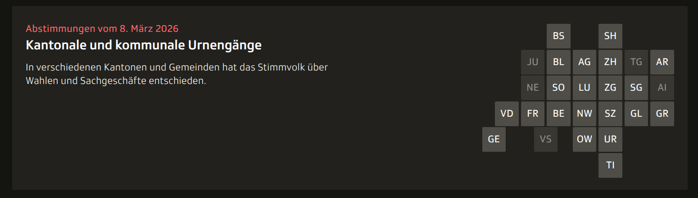
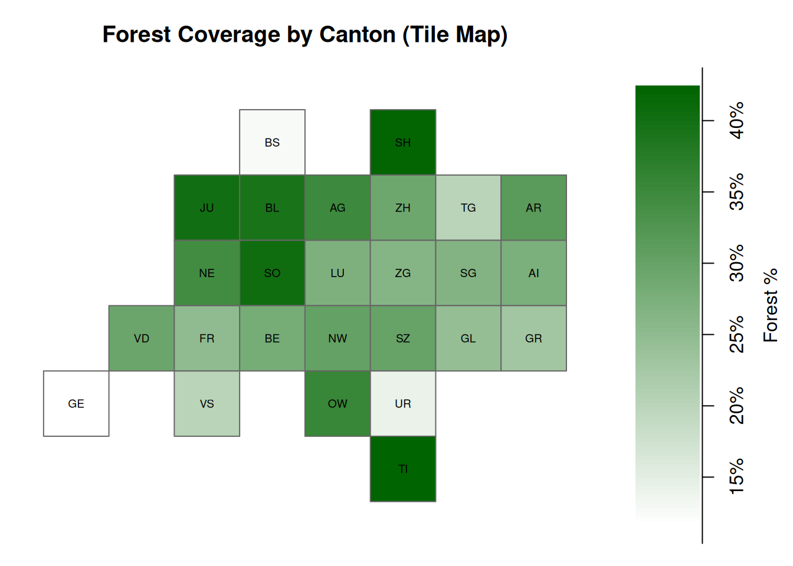

library('tidyverse')
library('terra')
library('tictoc')
library('sf')
library('ggplot2')
# Set path to geodata
Sys.setenv(GEODATA = "/home/rhoumyas/data/geodata")
# Construct the path to geodata
swisstlm_path <- file.path(Sys.getenv("GEODATA"), "SWISSTLM3D_2026_LV95_LN02.gpkg")
swissbound_path <- file.path(Sys.getenv("GEODATA"), "swissBOUNDARIES3D_1_5_LV95_LN02.gpkg")
# Start the timer for the total workflow time
tic("Total workflow time")Solution for Raster Deepdive
Introduction
In this file I am going to present my solutions for the Raster Deepdive exercise.
Task 1
- Redo Task 1 from Vector Deepdive (calculate the percentage of forest per canton). However, this time use the R package terra to to the processing.
- Again, use the R package tictoc to measure the execute time of each step in the process.
Preparing the Environment for Task 1
In this first step, I set up the R environment for working with geospatial data.
I begin by loading the necessary R packages:
tidyverse provides a suite of tools for data manipulation, cleaning, and visualization.
terra is used to handle spatial raster and vector data efficiently.
tictoc allows me to measure the runtime of the workflow, giving insight into the performance of my analysis.
Next, I define the path to my geospatial data folder. By setting the GEODATA environment variable using Sys.setenv(), I ensure that all datasets can be accessed consistently without having to repeatedly type long file paths. This keeps the workflow cleaner and reduces the risk of errors caused by incorrect paths. Also like this I can save all the large geodata files in a cetral location and I do not need to copy them every time I start a new project.
I then construct the full paths to the key geopackage files I will use in the analysis:
SWISSTLM3D, which contains detailed land cover information, including building footprints, roads, and natural features.
swissBOUNDARIES3D, which contains administrative boundaries such as the Swiss cantons.
Before diving into the data processing steps, I start a timer with tic(“Total workflow time”). This allows me to measure how long the entire workflow takes to execute. At the end of the workflow, I will stop the timer and see the total runtime.
At this point, the R environment is fully prepared, the key datasets are referenced, and I am ready to begin the spatial data analysis workflow.
Importing the Geospatial Vector Data
In this step, I begin by timing the data import process using tic("Import data").
Next, I load the key layers from the geopackage files using vect() from the terra package:
landcover: I read the"tlm_bb_bodenbedeckung"layer from the SWISSTLM3D geopackage. This layer contains detailed land cover information for Switzerland, such as forest, water, urban areas, and other surface types.cantons: I read the"tlm_kantonsgebiet"layer from the swissBOUNDARIES3D geopackage. This layer provides the administrative boundaries of the Swiss cantons.
After importing the layers, I use toc(log = TRUE) to stop the timer and log the duration of the import step.
At this point, both the land cover and canton layers are loaded into R as SpatVector objects, and I am ready to start the spatial analysis workflow.
# Start timer
tic("Import data")
# Read layers
landcover <- vect(swisstlm_path, layer = "tlm_bb_bodenbedeckung")
cantons <- vect(swissbound_path, layer = "tlm_kantonsgebiet")
# Log time
toc(log = TRUE)Import data: 13.717 sec elapsedFiltering for Forest Polygons
Now i filter out the forest areas from the broader land cover dataset. To measure how long this filtering step takes, I start a timer with tic("Filter forest polygons").
I then subset the landcover SpatVector by the attribute objektart, keeping only the polygons where objektart == "Wald". This creates a new object called forest, which now contains only the areas classified as forest in Switzerland.
Filtering the dataset in this way allows me to concentrate my analysis on forested regions, making subsequent spatial operations more efficient and relevant. By reducing the dataset to only the polygons of interest, I can speed up processing and avoid unnecessary computations later on.
After completing the filtering, I call toc(log = TRUE) to stop the timer and log how long this step took.
# Start timer
tic("Filter forest polygons")
# Keep only forest polygons
forest <- landcover[landcover$objektart == "Wald", ]
# Log time
toc(log = TRUE)Filter forest polygons: 2.602 sec elapsedIntersecting Forest Polygons with Canton Boundaries
Now that I have isolated the forest polygons, the next step is to associate them with the administrative boundaries of Switzerland. To track how long this spatial operation takes, I start a timer using tic("Intersect forest with cantons").
I then use the intersect() function from the terra package to compute the spatial intersection between the forest polygons and the cantons layer. The result, stored in forest_in_canton, contains only the portions of forest polygons that fall within each canton, effectively splitting forest areas along canton borders.
This step is important because it allows me to perform canton-level analyses, such as calculating the total forest area per canton. Without this intersection, forest areas that cross canton boundaries would be incorrectly assigned or aggregated.
Finally, I stop the timer with toc(log = TRUE) and log the runtime.
#Start timer
tic("Intersect forest with cantons")
# Intersect forest with cantons
forest_in_canton <- intersect(forest, cantons)
# Log time
toc(log = TRUE)Intersect forest with cantons: 151.887 sec elapsedComputing Forest Area per Polygon
In this step, I quantify the size of each forest polygon within the cantons. To monitor performance, I start a timer using tic("Compute forest area per polygon").
I first convert the forest_in_canton SpatVector into a data frame using as.data.frame(). This allows me to work with the spatial attributes in a tabular format, which is useful for summarizing.
Next, I calculate the area of each forest polygon using the expanse() function from terra, specifying unit = "km" to get the area in square kilometers. I store this value in a new column called forest_area_km2.
At this point, the forest geometry is no longer needed for calculations, so the resulting forest_table contains all attribute information (like the canton it belongs to) plus the computed forest area, but no geometry, making it smaller and more efficient.
Finally, I stop the timer with toc(log = TRUE) and log the runtime for this step.
# Start timer
tic("Compute forest area per polygon")
# Compute forest area (km2) and remove geometry for table
forest_table <- as.data.frame(forest_in_canton) %>%
mutate(
forest_area_km2 = expanse(forest_in_canton, unit = "km")
)
# Log time
toc(log = TRUE)Compute forest area per polygon: 31.126 sec elapsedAggregating Forest Area by Canton
Now that I have the forest area for each individual polygon, I want to summarize the total forest area for each canton. To track performance, I start a timer using tic("Aggregate forest area by canton").
I use the following workflow to perform this aggregation:
group_by(name)groups the data by the canton name. This ensures that all polygons belonging to the same canton are considered together.summarise(total_forest_area_km2 = sum(forest_area_km2, na.rm = TRUE))calculates the total forest area per canton by summing theforest_area_km2column for each group. I includena.rm = TRUEto safely ignore any missing values.
The result, forest_area_per_canton, is a clean table showing the total forest area in square kilometers for each canton.
Finally, I stop the timer with toc(log = TRUE) to log how long the aggregation took.
At this stage, I have successfully transformed the detailed polygon data into a canton-level summary of forest coverage, that I can now combine with the canton geometries to later create a map.
# Start timer
tic("Aggregate forest area by canton")
# Sum forest area by canton
forest_area_per_canton <- forest_table %>%
group_by(name) %>%
summarise(total_forest_area_km2 = sum(forest_area_km2, na.rm = TRUE))
# Log time
toc(log = TRUE)Aggregate forest area by canton: 0.015 sec elapsedJoining Forest Totals to Canton Polygons and Computing Percentages
In this step, I combine the summarized forest areas with the original canton polygons to enable further analysis and visualization. Again I start a timer using tic("Join forest areas to cantons and compute pct") to track how long this step takes.
I begin by adding the total forest area per canton to the cantons SpatVector. I use match() to align the rows correctly. This ensures that each canton polygon receives the correct total forest area value.
Next, I calculate the total area of each canton using expanse(cantons, unit = "km") and store it in a new column called canton_area_km2. Having both the canton area and the forest area allows me to compute the percentage of the canton covered by forest.
This results in a column forest_pct indicating how much of each canton is forested.
Finally, I stop the timer with toc(log = TRUE) to record the runtime for this step. I also stop the overall workflow timer with another toc(log = TRUE), giving me the total execution time from start to finish.
At this point, I have a fully processed that is ready for visualization.
# Start the timer
tic("Join forest areas to cantons and compute pct")
# Join totals back to canton polygons and compute percentage
cantons$total_forest_area_km2 <- forest_area_per_canton$total_forest_area_km2[
match(cantons$name, forest_area_per_canton$name)
]
cantons$canton_area_km2 <- expanse(cantons, unit = "km")
cantons$forest_pct <- 100 * cantons$total_forest_area_km2 / cantons$canton_area_km2
# Log time
toc(log = TRUE)Join forest areas to cantons and compute pct: 0.376 sec elapsed# Total workflow time
toc(log = TRUE)Total workflow time: 199.993 sec elapsedCreating a Continuous Choropleth Map of Forest Coverage
Last time, I created a bar chart below my map and used a binned choropleth approach, to show forest percentages by canton. This allowed readers to read exact values easily from the bar chart, while the map provided a spatial overview.
For this workflow, I wanted to experiment with a continuous choropleth map to visualize the same data without the bar chart. My goal was to show why I previously decided on the bar chart + map combination: while a continuous choropleth looks visually appealing, it can be harder to extract exact numeric values directly from the map. In contrast, the bar chart clearly communicates the precise percentages, complementing the map’s spatial context.
# Convert SpatVector to sf
cantons_sf <- sf::st_as_sf(cantons)
# Plot with continuous colors
ggplot(cantons_sf) +
geom_sf(aes(fill = forest_pct), color = "grey40", size = 0.2) +
scale_fill_gradient(low = "white", high = "#238b45", name = "Forest %") +
theme_void() +
ggtitle("Percentage of Canton Covered by Forest")
Task 2
- Redo Task 1 from Vector Deepdive. However, this time use gdal from the command line to the processing. Note that you can use bash commands in quarto, you just have to set the language to {bash} in the code chunk and the engine to knitr in the YAML header
- Again, use the R package tictoc to measure the execute time of each step in the process. To measure the execution time of bash commands, you can use the approach shown below (which is a bit of a workaround since tictoc was made for R, not Bash commands)
- Compare the execution times of all approaches (sf, duckdb, terra, gdal). How do they differ?
Filtering Forest Polygons Using GDAL
For the second task, I switch from R to GDAL tools in Bash to perform spatial data processing directly on the geopackages. GDAL should be very efficient for these kinds of operations, especially with large datasets.
Before executing the Bash commands, I start a timer in R using tic():
# Start total workflow timer
tic("GDAL: Total workflow time")
# Start the process step timer
tic("GDAL: Filter forest polygons")I use ogr2ogr to filter the SWISSTLM3D bodenbedeckung layer and write only the forest polygons to a new geopackage:
ogr2ogr \
-where "objektart = 'Wald'" \
-nln forest \
forest.gpkg \
$GEODATA/SWISSTLM3D_2026_LV95_LN02.gpkg \
tlm_bb_bodenbedeckungHere’s what each option does:
-where "objektart = 'Wald'": filters the layer so only polygons withobjektart = 'Wald'are written. This is analogous to thelandcover[landcover$objektart == "Wald", ]step in R.-nln forest: sets the new layer name in the output geopackage toforest.forest.gpkg: the output file that will contain only forest polygons.$GEODATA/SWISSTLM3D_2026_LV95_LN02.gpkg: the input geopackage, using the system environment variable$GEODATAI set on my Linux machine.tlm_bb_bodenbedeckung: specifies the layer in the input file to read.
One important difference from R: in GDAL I cannot store interim results in memory like we did with SpatVector objects. I need to save filtered datasets to disk, so creating a single GeoPackage containing all the relevant geometries in one location (forest.gpkg) makes later calculations and workflow management much easier.
Next, I append the canton boundaries to the same geopackage, creating a combined dataset:
ogr2ogr \
-f GPKG \
-update \
-nln cantons \
$PWD/forest.gpkg \
$GEODATA/swissBOUNDARIES3D_1_5_LV95_LN02.gpkg \
tlm_kantonsgebiet-f GPKG: sets the output format to GeoPackage.-update: tells GDAL to update the existing geopackage (forest.gpkg) rather than creating a new file.-nln cantons: sets the layer name for the canton boundaries.$PWD/forest.gpkg: ensures the output is the existing geopackage in the current working directory.$GEODATA/swissBOUNDARIES3D_1_5_LV95_LN02.gpkg: input geopackage with canton polygons.tlm_kantonsgebiet: specifies the layer in the input file to read.
At this stage, forest.gpkg now contains two layers:
forest: filtered forest polygonscantons: canton boundaries
Finally, I stop the timer in R to log how long the Bash commands took:
# Log time
toc(log = TRUE)GDAL: Filter forest polygons: 5.202 sec elapsedCalculating Forest Area and Percentages per Canton
In this step, I perform the main spatial analysis directly in GDAL by computing the total forest area for each canton and the percentage of each canton covered by forest. Since I cannot hold large intermediate datasets in memory with GDAL, I use a GeoPackage and SQL queries via the SQLite dialect.
I start a timer:
tic('GDAL: Calculating area and pct')Then I run the following command:
ogr2ogr \
-f GPKG \
-dialect SQLite \
-sql "
SELECT
c.name AS canton,
c.geom,
SUM(ST_Area(ST_Intersection(f.geom, c.geom))) / 1e6 AS forest_area_km2,
ST_Area(c.geom) / 1e6 AS canton_area_km2,
(SUM(ST_Area(ST_Intersection(f.geom, c.geom))) / ST_Area(c.geom)) * 100 AS forest_pct
FROM cantons AS c
LEFT JOIN forest AS f
ON ST_Intersects(f.geom, c.geom)
GROUP BY c.name
" \
$PWD/cantons_forest.gpkg \
$PWD/forest.gpkg \
-nln cantons_forest
Here’s what each part does:
-f GPKG: specifies that the output format is a GeoPackage.-dialect SQLite: tells GDAL to interpret the SQL using SQLite spatial functions (ST_Intersection,ST_Area, etc.).-sql "...": the SQL query performs all calculations in one step:c.name AS canton: keeps the canton name.c.geom: retains the geometry of each canton.SUM(ST_Area(ST_Intersection(f.geom, c.geom))) / 1e6 AS forest_area_km2→ computes the total forest area in km² for each canton by intersecting forest polygons with the canton geometry.ST_Area(c.geom) / 1e6 AS canton_area_km2: calculates the total area of each canton in km².(SUM(ST_Area(ST_Intersection(f.geom, c.geom))) / ST_Area(c.geom)) * 100 AS forest_pct: computes the percentage of the canton covered by forest.LEFT JOIN forest AS f ON ST_Intersects(f.geom, c.geom): joins the forest polygons to each canton polygon where they intersect.GROUP BY c.name: aggregates the results per canton, so each row represents one canton.
$PWD/cantons_forest.gpkg: the output GeoPackage storing the summary results.$PWD/forest.gpkg: the input GeoPackage containing both forest and canton layers.-nln cantons_forest: names the new layer in the output GeoPackage ascantons_forest.
By using GDAL + SQLite in this way, I avoid keeping intermediate layers in memory. Everything is written to disk in the GeoPackage.
Finally, I stop the timer in R:
# Log process time
toc(log = TRUE)GDAL: Calculating area and pct: 534.702 sec elapsed# Log total workflow time:
toc(log = TRUE)GDAL: Total workflow time: 539.915 sec elapsedAt this point, cantons_forest.gpkg contains a fully processed summary layer:
- Geometry of each canton
- Total forest area per canton (
forest_area_km2) - Total canton area (
canton_area_km2) - Forest coverage percentage (
forest_pct)
This completes the entire GDAL workflow, producing the same results as the R-based workflow.
Visualizing the results
I wanted to check the results of the GDAL workflow, but I found a standard choropleth map a bit boring. Instead, I decided to recreate the tile map style used by SRF (the Swiss Broadcasting Company) for displaying election and vote results on their homepage.

The tile map shows each canton as a square in a fixed grid, colored according to the percentage of forest coverage. This layout makes it easy to compare values across cantons at a glance, while still giving a sense of their relative size and position.
cantons_forest <- vect("cantons_forest.gpkg" , layer = 'cantons_forest')
# Canton codes in 6x8 layout
grid_codes <- matrix(c(
"0","0","0","BS","0","SH","0","0",
"0","0","JU","BL","AG","ZH","TG","AR",
"0","0","NE","SO","LU","ZG","SG","AI",
"0","VD","FR","BE","NW","SZ","GL","GR",
"GE","0","VS","0","OW","UR","0","0",
"0","0","0","0","0","TI","0","0"
), nrow = 6, byrow = TRUE)
nrow_grid <- nrow(grid_codes)
ncol_grid <- ncol(grid_codes)
code_lookup <- c(
BS = "Basel-Stadt", SH = "Schaffhausen", JU = "Jura",
BL = "Basel-Landschaft", AG = "Aargau", ZH = "Zürich",
TG = "Thurgau", AR = "Appenzell Ausserrhoden", NE = "Neuchâtel",
SO = "Solothurn", LU = "Luzern", ZG = "Zug",
SG = "St. Gallen", AI = "Appenzell Innerrhoden", VD = "Vaud",
FR = "Fribourg", BE = "Bern", NW = "Nidwalden",
SZ = "Schwyz", GL = "Glarus", GR = "Graubünden",
GE = "Genève", VS = "Valais", OW = "Obwalden",
UR = "Uri", TI = "Ticino"
)
# Join codes to forest_pct
forest_lookup <- setNames(cantons_forest$forest_pct, cantons_forest$canton)
colors <- colorRampPalette(c("white","darkgreen"))(100)
pct_range <- range(forest_lookup, na.rm = TRUE)
breaks <- seq(pct_range[1], pct_range[2], length.out = length(colors) + 1)
layout(matrix(c(1, 2), nrow = 1), widths = c(4, 1.2))
## Panel 1: Tile map
par(mar = c(1,1,3,1))
plot(NA, xlim=c(0, ncol_grid), ylim=c(0, nrow_grid),
xaxt="n", yaxt="n", xlab="", ylab="", asp=1,
main="Forest Coverage by Canton (Tile Map)", axes = FALSE)
for(r in 1:nrow_grid){
for(c in 1:ncol_grid){
code <- grid_codes[r,c]
if(code != "0"){
pct <- forest_lookup[code_lookup[code]]
col_idx <- findInterval(pct, breaks, all.inside = TRUE)
rect(c-1, nrow_grid-r, c, nrow_grid-r+1,
col = colors[col_idx],
border = "grey40")
text(c-0.5, nrow_grid-r+0.5, labels = code, cex=0.6)
}
}
}
## Panel 2: vertical colorbar
par(mar = c(1,1,3,4))
plot(NA, xlim = c(0,1), ylim = pct_range,
xaxt = "n", yaxt = "n", xlab = "", ylab = "", bty = "n",
main = "")
for(i in seq_along(colors)){
rect(0, breaks[i], 1, breaks[i+1],
col = colors[i], border = NA)
}
axis(4, at = pretty(pct_range),
labels = paste0(pretty(pct_range), "%"))
mtext("Forest %", side = 4, line = 2.5)
Comparing Execution Times
I timed all four approaches for computing forest coverage by canton and observed some interesting differences:
| Method | Execution Time |
|---|---|
| GDAL | 523 sec |
| terra | 195 sec |
| sf | 253 sec |
| duckdb | 0.035 sec (query only) |
My observations:
- GDAL was by far the slowest, taking over 8 minutes. This might be because the workflow writes intermediate results to disk (GeoPackages) and performs all intersections in one step, which might be not memory-efficient for large layers. There is room to optimize this workflow and I need to read up on GDAL as a tool.
- terra was much faster, completing in just over 3 minutes. This makes sense because
terraworks efficiently in memory and is optimized for large vector/raster operations. - sf took slightly longer than
terra, around 4 minutes, likely due to the waysfhandles geometries in R, compared toterra. - duckdb was extremely fast for the query itself (milliseconds), but loading the spatial data into R took several minutes, which offsets some of the raw speed advantage. DuckDB is excellent for SQL-style operations once the data is in the database.
Conclusion:
- For raw execution, duckdb is fastest for querying, but the overhead of getting the data into R matters.
- terra provides a good balance of speed and convenience for fully in-memory R workflows.
- GDAL is slower in this setup because it relies heavily on writing/reading large GeoPackages, suggesting that the workflow could be optimized to reduce disk I/O.